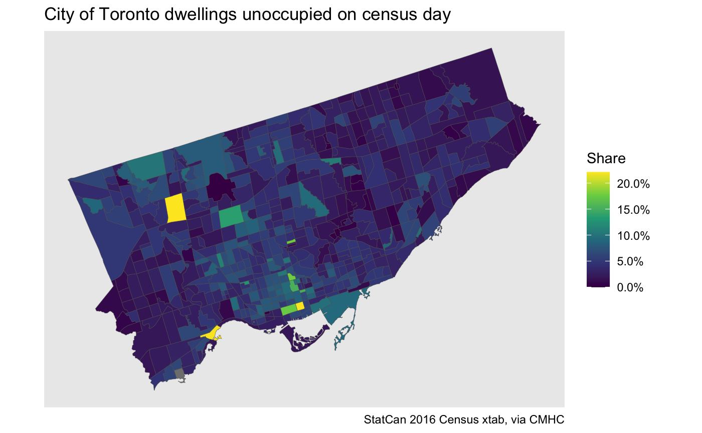

vignettes/Dwellings_by_document_type_cross_tabulation.Rmd
Dwellings_by_document_type_cross_tabulation.RmdThrough collaboration with the Canadian Mortgage and Housing Corporation (CMHC), CensusMapper has added and open-sourced a special cross-tabulation with Structural Type of Dwelling by Document Type down to the Census Tract level for the census years 2001, 2006, 2011 and 2016. Structural Type of Dwelling is a common census variable that describes the type of structure a dwelling unit is in. Document Type is a less frequently used variable that classifies whether the census determined the dwelling is either:
This cross-tabulation has information on the structural type of the entire building stock, not just the occupied dwelling units. This is useful when trying to understand the built-up fabric of urban environments.
As an example, we look at the structure of the dwelling stock in the City of Toronto in 2016.
Dwellings registered as unoccupied on Census day capture the imagination of many, although people often mistakenly pull data on dwellings not occupied by usual residents as it is easily available in the standard Census profile data. The advantage of this custom cross-tabulation is that it allows researchers to zoom in on dwellings that were classified as unoccupied by the enumerator on Census day for additional detail.
In this example, we want to retrieve the custom structural dwelling cross-tab for the 2016 Census year with the code CA16xSD for the Toronto Census subdivision with the standard Statistics Canada region code 3520005. For more background on searching for Census geographical regions, see ?list_census_regions() or the Get started with cancensus vignette.
# Attribution for the dataset to be used in graphs attribution <- attribution_for_datasets("CA16xSD") # Select all variables base variables, this gives us total counts by structural type of dwelling vars <- list_census_vectors("CA16xSD") %>% filter(is.na(parent_vector)) variables <- setNames(vars$vector,vars$label) variables #> Total dwellings #> "v_CA16xSD_1" #> Single-detached house #> "v_CA16xSD_2" #> Semi-detached house #> "v_CA16xSD_3" #> Row house #> "v_CA16xSD_4" #> Apartment or flat in a duplex #> "v_CA16xSD_5" #> Apartment in a building that has fewer than five storeys #> "v_CA16xSD_6" #> Apartment in a building that has five or more storeys #> "v_CA16xSD_7" #> Other single-attached house #> "v_CA16xSD_8" #> Movable dwelling #> "v_CA16xSD_9"
The named vector labels the census variables we are about to query.
# Separate out the individual dwelling types dwelling_types <- setdiff(names(variables),"Total dwellings") # Grab the census data and compute shares for each dwelling type census_data <- get_census("CA16xSD",regions=list(CSD="3520005"), vectors = variables, quiet = TRUE) %>% pivot_longer(cols = all_of(dwelling_types)) %>% mutate(share=value/`Total dwellings`)
To visualize what this looks like on a bar chart:
ggplot(census_data,aes(x=reorder(name,share),y=share)) + geom_bar(stat="identity",fill="steelblue") + coord_flip() + scale_y_continuous(labels=scales::percent) + labs(title="City of Toronto dwelling units by structural type", x=NULL,y=NULL,caption=attribution)
As with regular Census data, all data can be retrieved as spatial data. Sometimes it’s easier to use the CensusMapper API interface to search for and select the variables we are interested in. The explore_census_vectors() function opens a browser with the variable selection tool, we determine that “v_CA16xSD_1” and “v_CA16xSD_28” are the variables enumerating all dwellings and all unoccupied dwellings, respectively.
# Use explore_census_vectors() to browse and select variables of interest vars <- c(Total="v_CA16xSD_1", Unoccupied="v_CA16xSD_28") # Retrieve data with attached geography census_data <- get_census("CA16xSD",regions=list(CSD="3520005"), level="CT", quiet = TRUE, geo_format = "sf", vectors = vars,use_cache = FALSE) %>% mutate(share=Unoccupied/Total) # Visualize ggplot(census_data,aes(fill=share)) + geom_sf(size=0.1) + scale_fill_viridis_c(labels=scales::percent) + coord_sf(datum=NA) + labs(title="City of Toronto dwellings unoccupied on census day", fill="Share", x=NULL,y=NULL,caption=attribution)
